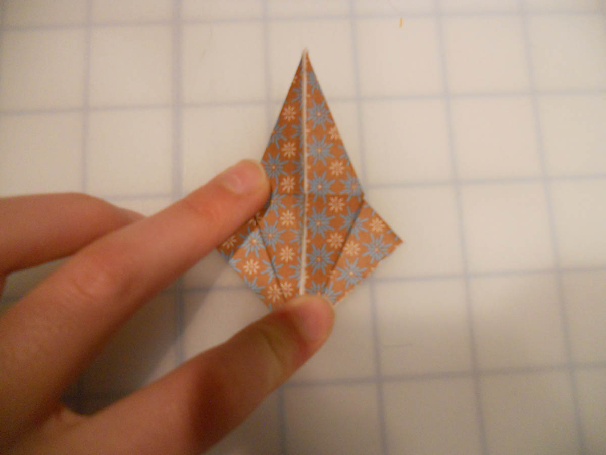

How to do an Origami Petal Fold
To do an origami petal fold, you open up the paper and fold the two sides inwards. Now you can learn to do one from this tutorial.
1. Start with a Preliminary base. Click the
link if you don't know how to make one.
2. Fold both sides inwards.
3. Fold the top tip downwards as far as it will
comfortably go.
4. Unfold back to the preliminary base.
5. Open the top tip upwards on the crease
from step 3.
6. Each side should be able to comfortably
collapse on the creases, as shown here on the
right.
7. Flatten the right side in.

8. Repeat step 7 on the left. You have completed
a petal fold!